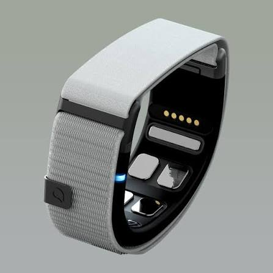

Mudra Link es una pulsera inteligente lanzada en 2025 que introduce un concepto completamente nuevo en la interacción digital. En lugar de depender de cámaras externas o botones físicos, incorpora sensores de Conducción Nerviosa de Superficie (SNC - Surface Nerve Conductance) que detectan la señal eferente que envía el cerebro a los dedos a través de la muñeca.

Explora las imágenes reales del producto.
Vista detallada de la pulsera inteligente Mudra Link. Se observan los sensores metálicos de Conducción Nerviosa de Superficie (SNC) en la cara interna, diseñados para captar los impulsos eléctricos de la muñeca.
Aportes fundamentales en la interacción hombre-máquina.
Al leer los impulsos nerviosos antes de que los músculos completen el movimiento visible, ofrece una velocidad de respuesta superior a las cámaras de seguimiento manual.
No depende de la línea de visión de ninguna cámara. Funciona con las manos en los bolsillos, debajo de una mesa o en movimiento sin perder señal.
Los sensores no solo registran el gesto, sino también la intención de fuerza ejercida por el usuario, permitiendo un control analógico gradual.
A qué dispositivos sustituye y cómo ha mejorado la tecnología de entrada.
| Dispositivo | Mecanismo de Interacción | Limitaciones Principales | Mejora que Aporta Mudra Link |
|---|---|---|---|
| Ratón y Teclado | Contacto mecánico y movimiento físico sobre superficie | Requiere superficie plana y presencia física ante el equipo | Permite control sin superficie y en cualquier posición física |
| Guantes Hápticos / Mandos VR | Sensores de flexión mecánica y joysticks en la mano | Voluminosos, pesados y provocan fatiga tras uso continuado | Formato de pulsera ultra-ligera sin obstruir la mano |
| Cámaras (Hand Tracking) | Visión por ordenador y reconocimiento óptico de gestos | Sensible a mala iluminación y oclusiones fuera de campo | Lectura interna por electrodos, independiente de la luz o el campo visual |